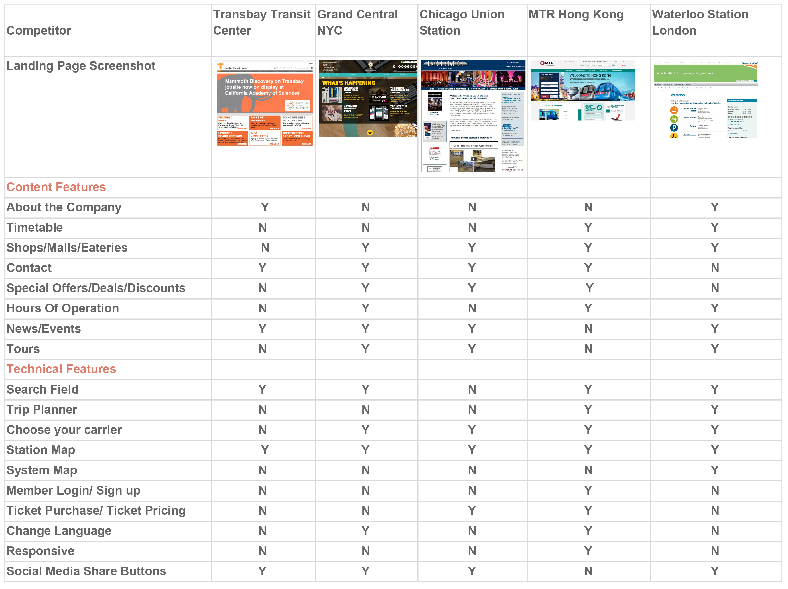
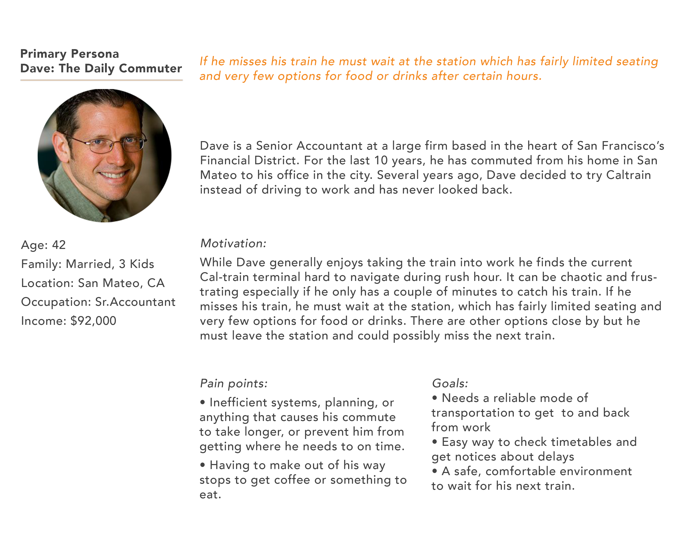
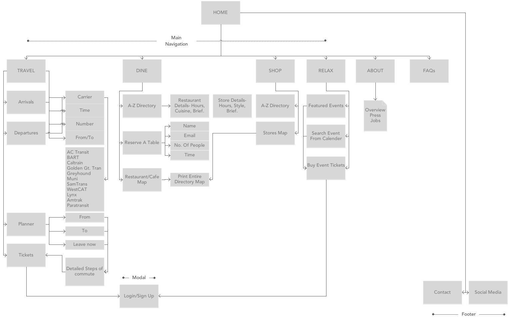
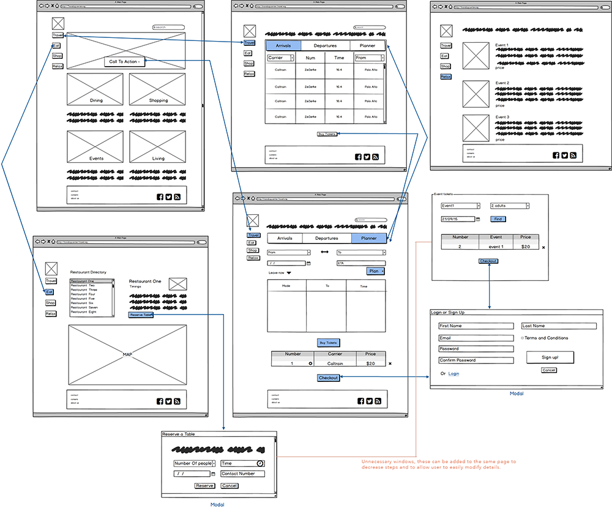
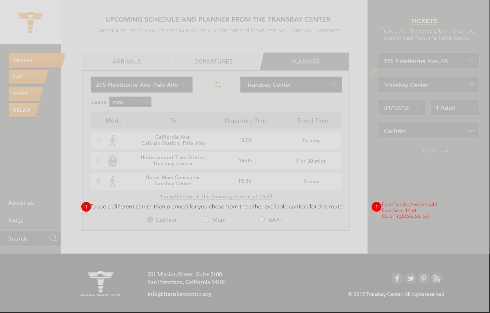

Process
The Strategic Research
The first step in my research was to conduct stakeholder and user interviews to
understand the metrics that would define success and what users wanted from the product.
These interviews were crutial in understanding that the purpose of the site was to ensure
that it is used as the primary medium to buy tickets for transit and events, make reservations,
for promoting all the ammenities the Center has to offer in one place. From most user’s
perspective the most frustrating part of their commute across the Bay was having to check
multiple websites and coordinate timings between all of the transport carriers. The users
wanted to “find everything they would need (tickets, updates, schedules) for their commute
in one place”. Market research of doing a competitor analysis highlighted successful features
other transit hub sites were implementing and features they were falling short of.


Personas and Task Analysis
To get a deeper insight into our user needs, motivations and pain points, I created multiple user
personas and from that pool selected the primary persona, Dave around who the interface would be
designed. While considering one of the secondary personas, I realized the need to add an event
directory feature as it aligned with the requirements from the stakeholders and did not conflict
with my primary persona. I then created a task analysis table that identified what Dave’s thought
process would be when interacting with the site and his expected reaction to each feature segment.
Information Architecture
Once the content and feature specifications were finalized I moved on to building the
structure of the site. Since our content was limited and fairly straightforward I decided
to use a hierarchical structure. There was going to be one index page which was the home
page and all the features of the Center would form the sub-pages which in-turn had feature
specific pages under them with the freedom of going back to a previous page.


Interactive Wireframes
To uncover any roadblocks before the visual design process takes place, I created quick,
greyscale, interactive wireframes using Balsamiq. The idea was to focus on how the features
and content would fit, how a user would flow through the site and if the information structure
works well, and not get bogged down in details like colors, images, typography etc. Once the
wireframes were presented in the class and we started discussing the flow, I discovered the
need to eliminate “extra” modal windows as they were making the user interaction much more
complicated than necessary. I decided to add a ticket buying column into the same page as the
schedule and planner as the user can instantly see what tickets he would need and how much they
were going to cost him instead of having another page for them altogether. This also allowed
users to make changes in their itinerary much more easily. Similar changes were made in the
dine and relax page. Instead of having the user go through 2 pages to get his tickets for an
event or make a reservation, he would now be able to do all of that in a single step.
High Fidelity Mockups
Applying visual design principles of color, typography, grid systems and images to the
skeleton to create a cohesive look and feel and provide users with a delightful interface.
